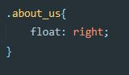
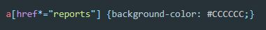
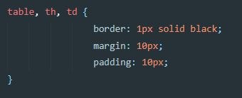
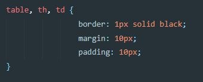

Лємєшова С. С,
Лємєшова С. С,  Тітов Є. О,
Тітов Є. О,  Юдаков О. С.
Юдаков О. С. 
ЛАБОРАТОРНА РОБОТА №2
Тема:КАСКАДНІ ТАБЛИЦІ СТИЛІВ. СЕЛЕКТОРИ .ІДЕНТИФІКАТОРИ. СТИЛЬОВЕ ОФОРМЛЕННЯ ТЕКСТОВИХ ЕЛЕМЕНТІВ В HTML-ДОКУМЕНТАХ.
Мета: придбати практичні навички роботи з селекторами,ідентифікаторами, списками, різноманітними властивостями кольору і фону, зовнішними та внутрішними відступами, плаваючими елементами, оформленням текстових елементів
Розташування лабораторної: GitHub Лабороторна робота №2
Cписки
Ідентифікатори
Відступи
Плаваючі елементи
Селектори
 

Висновки: Протягом цієї лабораторної роботи ми придбали практичні навички роботи з селекторами,ідентифікаторами, списками, різноманітними властивостями кольору і фону, зовнішними та внутрішними відступами, плаваючими елементами, оформленням текстових елементів